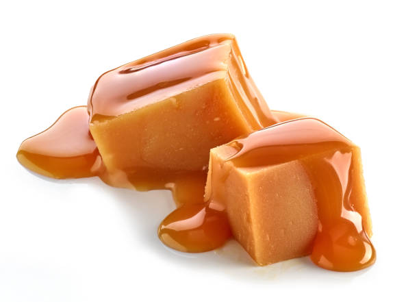

Overview
Butterscotch, usually hard candy made by boiling brown sugar and butter and sometimes corn syrup together in water. The derivation of the name is disputed as to whether it denotes the candy's origin in Scotland or an original ingredient of “scotched,” or scorched, butter.
Images
Interesting Facts
- September 19th is National Butterscotch Pudding Day.
- A type of confectionery, butterscotch is majorly formed of brown sugar and butter.
- The name has been derived from the Scotland as an original ingredient of butter or scorched.
- Having a sweet and creamy taste, Butterscotch is usually a golden tan in color.
- Although similar to toffee, in Butterscotch the sugar is boiled to less temperature so as to keep the soft crack stage, but not hard crack as in case of toffee.
Nutritional Information
Here is some nutritional information for butterscotch:
| Nutrition Information | Per 100g |
|---|---|
| Energy(in calories) | 391cal |
| Fat | 3.3g |
| Sugar | 80g |
| Fibre | 2.8g |
| Protien | 5.5g |
| Salt | 0.3g |